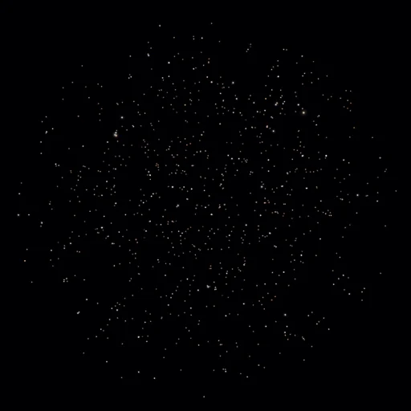
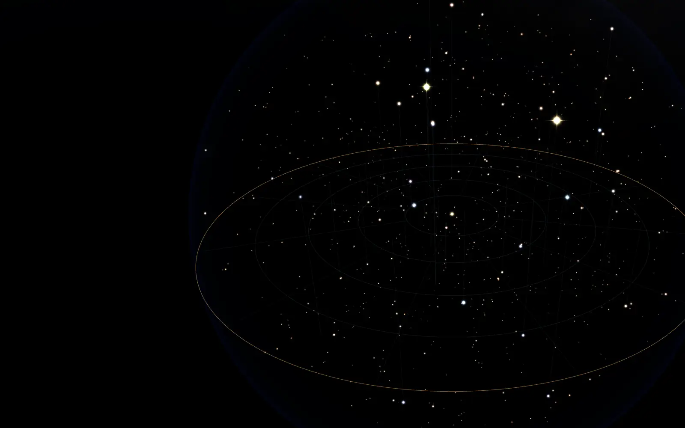
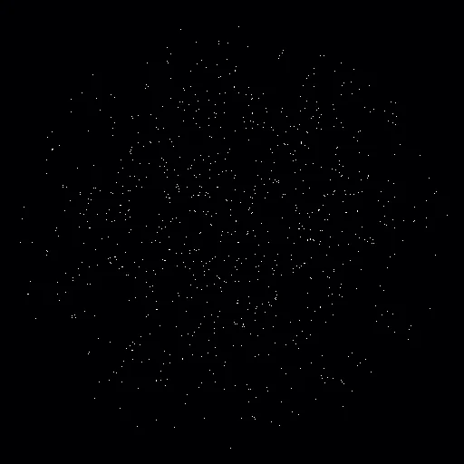
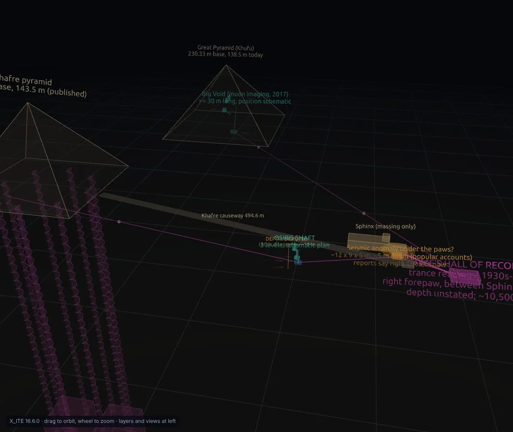
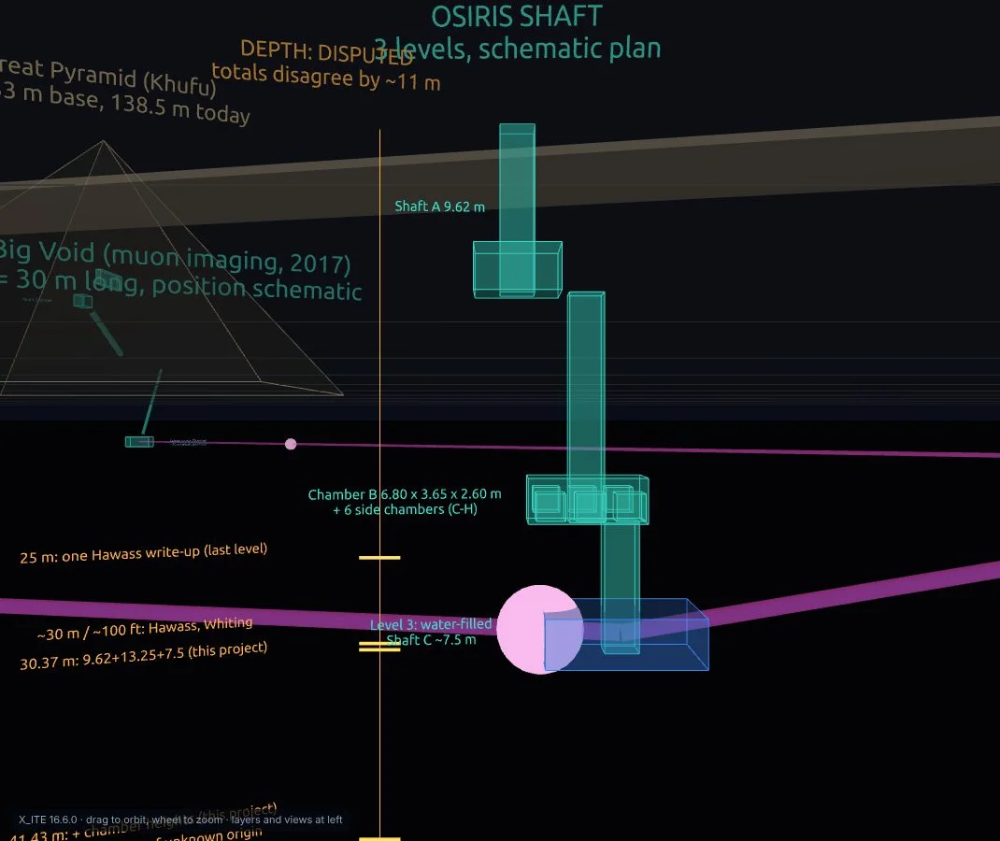

X3D 4.1 · X_ITE 16.7.1


Every point of light here is a real star: all 978 within 50 light-years of the Sun, from the HYG v4.1 catalogue, stored as X3D 4.1 Gaussian splats that this Blender add-on reads and writes. Drag to orbit. Hover a star.
That whole sky is one 146 KB X3D file.
Blender opens it. X_ITE draws it. Babylon.js draws the glb.
The hero is three.js on the catalogue data. Below, the same stars as the X3D file itself in X_ITE, and as the glb this add-on exports from it in Babylon.js. Until PR #37 (13 Nov 2026), that glb came out about a hundred million times too small.




the plateauOsiris ShaftA schematic X3D 4.0 study with three switchable layers: documented (cyan), theorized (amber) and speculative (magenta), from the 2017 Big Void to Cayce's Hall of Records. Underground positions are schematic, and the study says so.
Drag each slider from Blender's Cycles render to the same scene drawn live by X_ITE from the X3D file this add-on wrote. Then press play and fly it yourself, in X_ITE or as a glb in Babylon.js.
Tap a tile for its receipt. “Fork point” is commit 7f8c0fb of 8 October 2026: the upstream extension 2.5.1 with its April 2026 X3D 4.0 parser rewrite. Everything after it is this fork.
Measured on Blender 5.3.0 (bpy wheel) unless a receipt says otherwise. Fidelity numbers are headless Chromium 153 with software GL; no frame rates are quoted.
Blender is where scenes get made; X3D 4 is what browsers, validators and AI tools agree to read. This add-on is the bridge, and it checks its own work.
Principled BSDF becomes PhysicalMaterial with glTF-style texture slots; emission-only trees become UnlitMaterial; shared data is written once with DEF/USE.
PBR to Principled node trees, Switch shows only its chosen child, Geometry2D, IndexedQuadSet, TwoSidedMaterial, textures with alpha, ElevationGrid with colours.
TimeSensor plus interpolators import as keyframes. Shape keys leave as a CoordinateInterpolator and come back as shape keys.
Armatures export as HAnimHumanoid with joints, skinned meshes and weights; HAnim imports as an armature with bones, vertex groups and animation.
The draft X3D 4.1 GaussianSplats node writes and reads, and Blender 5.3's native splat point clouds export straight to it. 20,000 degree-3 splats round-trip bit-exact.
GeoElevationGrid and GeoViewpoint in GD, GC, UTM and Web Mercator, on the spec's ellipsoids, in float64 with a GeoOrigin.
Extreme Transform scales import, export to glb at the right size and write back to X3D with their digits intact. 1e-16 used to print as 0.000000.
sRGB by default, as X_ITE 16.7.1 and Castle draw it; colours converted once and written back as they came. Lights fitted to what the browser shows.
The X3D 4.0 writer validates its own output. A fidelity rig renders X_ITE on the X3D against Babylon.js on the glb and runs every glb through the Khronos validator.

 lights lostlights kept
lights lostlights kept
global="true" and lit nothing outside their own group. One attribute, an entire scene.
 Blender CyclesX3D 4.0 in X_ITE
Blender CyclesX3D 4.0 in X_ITE
 fork pointnow
fork pointnow
Each was invisible until a number said otherwise. Each is now covered by a test.
The glTF exporter inverted a 1e-16 matrix in 32-bit floats and got 1e8 instead of 9.46e15. Extreme scales now move onto the children; no world matrix changes.
Blender 5.x made indexed corner reads cost time proportional to the collection; the exporter read one per corner. Bulk reads fixed it, byte-identical.
Expat 2.6 deferred big elements past the point where the reader stopped. Files of about 18,000 splats vanished. Now bit-exact at any size.
Per-vertex colours went through the sRGB curve twice, so a Color of 0.5 imported as 0.04.
The importer puts X3D time 0 on Blender's frame_start, the factory frame 1. The rig now starts at 0: first sample 0.0 s.
Export divided point and spot energy by 1.75; import forgot to multiply back. Fixed both ways.
| Capability | At the fork point | Now | Where |
|---|---|---|---|
| X3D 4.0 export of PBR materials | Only the 3.3 Material writer | PhysicalMaterial, UnlitMaterial, textures, DEF/USE, validated | PR #1 |
| Animation from ROUTEs | Not rebuilt | Keyframes; shape keys ⇄ CoordinateInterpolator | PR #2, #16, #22 |
| HAnim humanoids | Not supported | Import and export with skin and joint animation | PR #2, #4 |
| Gaussian splats | Not supported | X3D 4.1 node, Blender 5.3 native, bit-exact round trip | PR #5, #12 |
| GeoElevationGrid, GeoViewpoint | Skipped, empty scene | Mesh and camera in float64 (UTM, GD, GC, WM) | PR #35 |
| Extreme scales (1e-16, 1e16) | Import crash; glb 1e8 too small; printed as 0 | Imports, exports to glb at size, writes back exactly | PR #35, #37 |
| Colour of classic materials | Kept as is; per-vertex converted twice | sRGB as X_ITE and Castle draw; round-trips | PR #27–#29 |
| Light units | One fixed mapping, 1.75× lost per round trip | As Blender or As X_ITE draws, fitted per scene | PR #28, #30 |
| Large-mesh export | Quadratic: 315 s for 66,177 vertices | Linear: 0.67 s | PR #25 |
| glb quality gate | None | Khronos validator on every glb, manifest per scene | PR #33 |
| Instanced glb | One node per instance | EXT_mesh_gpu_instancing via Group instances | PR #34 |
This work only exists because a community kept an X3D and VRML2 add-on alive in Blender for more than a decade. The importer, the exporter and the architecture are theirs; this fork extends them and keeps everything upstream still working.
Upstream: Web3D X3D/VRML2 format on the Blender extensions platform (maintained by Bujus_Krachus; source). This fork is independent and not endorsed by it. Maintained by HagopJay. GPL-3.0-or-later. Written with AI assistance (Claude Code), reviewed and merged by a person.
# 1. Get the add-on git clone https://github.com/hagopjay/x3d-blender-io blender --command extension build --source-dir ./source --output-dir ./dist # 2. Blender → Edit → Preferences → Get Extensions → Install from Disk → dist/x3d_blender_io-*.zip # 3. File → Export → X3D → X3D Version: X3D 4.0 (PBR) or X3D 4.1 draft (GaussianSplats) # 4. Open the file in X_ITE: https://create3000.github.io/x_ite/